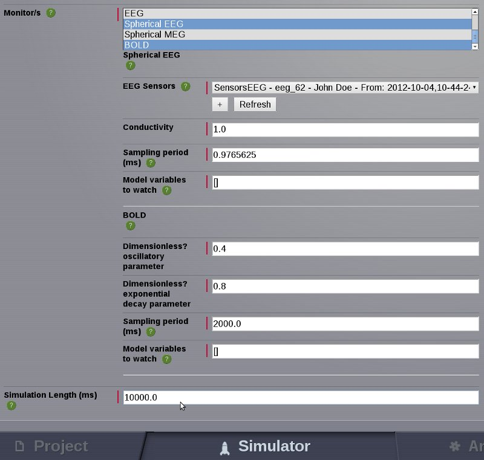

Simulating EEG-fMRI whole brain dynamics for individual connectivity matrices
Objective: learn how to upload your own (i.e., artificial or subject-specific)
connectivity data and generate the corresponding simulated EEG and fMRI signals.
Summary:
In |TVB| platform it is possible to upload your own large-scale connectivity
datasets (e.g., derived from DTI tractography), edit them (e.g., in order to
mimic brain lesions) and generate simulated imaging signals like EEG and BOLD.
In the present study, a lesion in a given node area is modeled by
removing all the incoming and ongoing connections into and from this node.
- Create a new project and upload a connectivity data set following the steps
described in the Import Data section.
- Upon uploading, the new connectivity set appears as entry in the Project Data
Structure Tree.
- Upon clicking the new list entry, the Datatype Details overlay appears.
This window enables you for each dataset in TVB to examine object properties
(e.g., summary statistics), edit the object metadata, view and launch all
Analyzer and Visualizer operations that are defined for this data type, link
the dataset to other projects and to export the dataset.
- Check your connectivity set by launching the Connectivity Viewer from the tab
Visualizers. The viewer also enables editing of individual connectivity
weights or tract lengths and to perform lesions by removing entire nodes
(please refer to the tutorial A simple lesion study using TVB for
further details on performing lesions). Select a node from the Weights Matrix,
enter a custom edge weight value in the overlay field and select Change edge value.
- You can now simulate brain activity using your own connectivity data. Switch
to the Simulator interface in order to configure simulation details.
- Select your uploaded connectivity set from the Long-range connectivity
drop-down menu.
- Configure further simulation parameters: large-scale coupling (e.g.,
long-range coupling function, conduction speed), cortical surface, stimuli,
local dynamics, integration scheme, monitors and the simulation length.
- Here we set the multiplicative long-range connection strength factor a equal
to 17.2 and the conduction speed to 10 mm/ms.
- Then we choose Stefanescu-Jirsa (reduced Hindmarsh-Rose) as Local dynamic
model and use HeunStochastic as Integration scheme and an Integration step size of
0.0156 ms.
- We select Spherical EEG and BOLD as monitors and set the EEG Sampling period
to 1 ms and the simulation length to 4000 ms.
- Configure portlets to view simulation results, e.g., the EEG lines viewer
for EEG simulations.
- Name the new simulation and launch it.
- In the Projects interface select Operations from the second-level tab menu
to follow the current status of the simulation (hit reload button to update).
- Upon finishing, you can view simulation results in the portlets viewer or by
selecting them from the Project Data Structure Tree (Simulation results
will be listed under the node Intermediate Data).
Note
Please check that simulation length is larger than the BOLD sampling period!!
